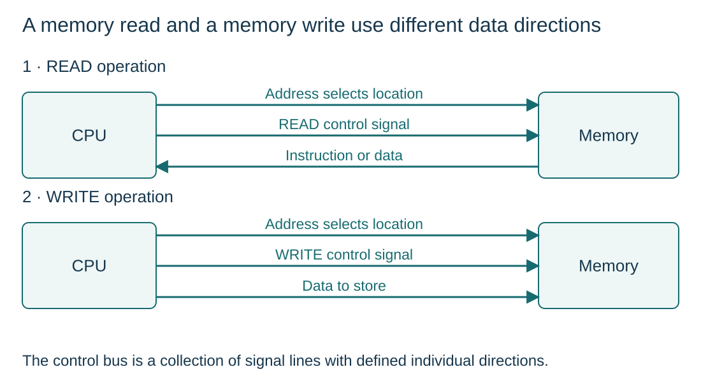

Address, data and control buses
S4.04.A01
Visual overview
A memory read and a memory write use different data directions

Visual transcript
- In the processor-controlled model, the address goes from CPU to memory for both reads and writes.
- For a read, data returns from memory to CPU; for a write, data goes from CPU to memory.
- READ and WRITE are CPU control outputs. Other control lines, such as interrupt requests, can be inputs.
Core explanation
What each bus carries
- Address bus: Selects a memory location or addressed interface. In the basic processor-controlled model, the address travels outwards from the processor.
- Data bus: Carries instructions and data. Reads return values to the CPU; writes send values from the CPU.
Control signals have individual directions
The control bus coordinates operations. READ and WRITE travel from the CPU; interrupt requests can travel towards it. The collection is bidirectional, but each individual signal line has its own defined direction.
A memory transaction
| Transaction | Address bus | Data bus | Control bus |
|---|---|---|---|
| Read Memory[300] | Processor → memory: 300 | Memory → processor: stored value | Read signal towards memory |
| Write 12 at address 301 | Processor → memory: 301 | Processor → memory: 12 | Write signal towards memory |
| Peripheral interrupt request | Not the event data | Not the request line | Interface → processor: request |
Worked example · Read then modify a value
- Read
For Memory[300]=8, the processor selects address 300 and issues read; the data bus returns 8.
- Calculate
An internal addition increases the value to 9.
- Write
The processor selects address 300 again, places 9 on the data bus and issues write. The stored value becomes 9.